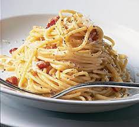

Wow Italian
"Carbonara"

"Instructions"
Wow and amaze with the indulgent carbonara dish, that will not rival an authentic recipe!
"Ingredients
- 1/2lb pancetta
- 60g parmesan cheese
- 2 eggs
- 1 tablespoon olive oil or butter
- 8oz parpadelle, linguine or similar
"Steps
- Bring 2 quarts of water and 1 tablespoon of salt to a boil
- In a large pan, heat 1 tablespoon of olive oil or butter. Add your pancetta to the pan and cook until crispy. Move the pancetta to a large mixing bowl when done
- In a small bowl, break and whisk two eggs. Add half (15g) of the parmesan cheese.
- Add the pasta to the boiling water, and cook until al dente (firm and not mushy, but not overly hard).
- Once pasta is cooked, quickly move the pasta diretly to the mixing bowl with the pancetta. Do not strain the pasta! It is ok for water to go into the bowl. Quickly throw your whisked eggs and cheese into the bowl and mix around. Add salt and plenty of black pepper to taste.
- Serve immediately and enjoy!